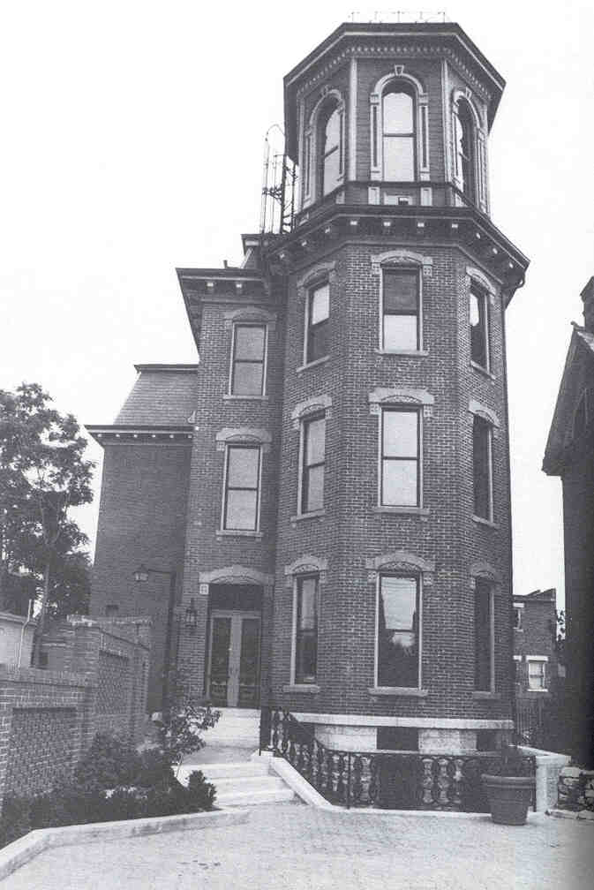

Columbus's landmark Schwartz Castle stands on Third Avenue in German Village, towering above the other buildings with its windowed turret. The house was built in the mid-1800's by Frederick William Schwartz, a successful German businessman who owned an apothecary shop on Main Street. He built the castle for him and his fiancee, who was still in Germany. Before they could be married, however, she sent him a Dear Frederick letter. No wedding.
After that, Schwartz got crazy, building secret passageways into his house. He gave it five stories of basement. He started doing lots of weird things. He became a vegetarian, drank only rainwater, grew his hair long, wore only wool against his skin, jogged barefoot 365 days a year, and sunbathed nude on the roof of the tower. The ladder he climbed is still visible in the tower, and it's said that you can sometimes see his ghost climbing it--there or in one of the second floor windows.
A man hung himself in one of the basements of the Schwartz Castle. In a second floor apartment, two brothers fought over who was too drunk to drive, and one stabbed the other one. It's said that you can still hear them quarrelling in the building.

Today the Schwartz Castle is divided into apartments. I'd definitely like to get inside, if only to see the five levels of basement.
"Supernatural Sightings Abound in the Villages"
- This Week article by Trish Borne
Back
Sources
Borne, Trish. "Supernatural Sightings Abound in The Villages." This Week. October 29, 1990.
Rubio, Josie. "Ghost Stories." Columbus Monthly Oct. 2003: 32-39.
Smith, Robin. Columbus Ghosts. Worthington, OH: Emuses, Inc., 2002. pp. 41-46.